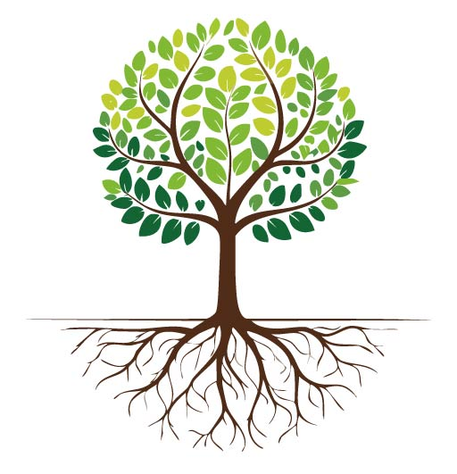

☰
Select a Principle:
Honesty
Hope
Faith
Courage
Integrity
Willingness
Humility
Brotherly Love
Justice
Perseverance
Spiritual Awareness
Service
Unity
Trust
Acceptance
Autonomy
Purpose
Responsibility
Fellowship
Structure
Neutrality
Anonymity
Gratitude
Forgiveness
Love
Patience
Open-Mindedness
Selflessness
Tolerance
Charity
Faithfulness
Spiritual Awakening

Welcome!
Select a principle from the menu to see its labels on the tree.